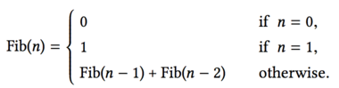
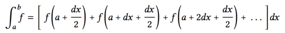
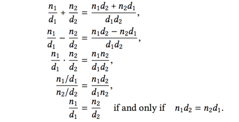
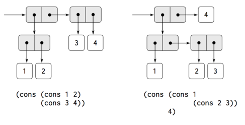
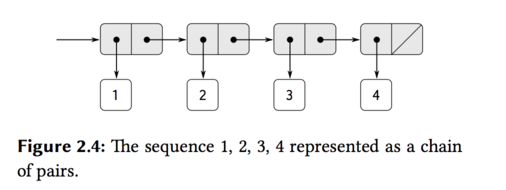
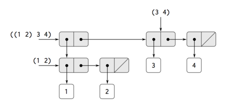
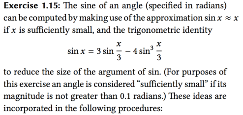
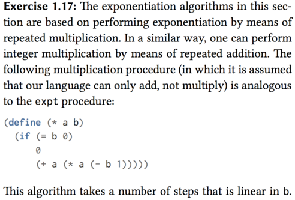

SICP sicp
Table of Contents
- 环境的选择
- 相关资源
- 读书笔记和代码
- Chapter 1 Building Abstractions with Procedures
- The Elements of Programming
- Expressions
- Naming and the Environment
- Evaluating Combinations
- Compound Procedures
- The Substitution Model for Procedure Application
- Applicative order versus normal order
- Conditional Expressions and Predicates
- Example: Square Roots by Newton's Method
- Supplement of Newton's Method:
- Procedures as Black-Box Abstractions
- Local names
- Internal definitions and block structure
- Procedures and the Processes They Generate
- Formulating Abstractions with Higher-Order Procedures
- The Elements of Programming
- Chapter 2 Building Abstractions with Data
- Chapter 1 Building Abstractions with Procedures
- 练习答案
- Chapter 1
- Exercise 1.1 p26
- Exercise 1.2
- Exercise 1.3
- Exercise 1.4
- Exercise 1.5
- Exercise 1.6
- Exercise 1.7 ✓
- Exercise 1.8
- Exercise 1.9
- Exercise 1.10
- Exercise 1.11 ?
- Exercise 1.12 ?
- Exercise 1.13 ?
- Exercise 1.14 ?
- Exercise 1.15 ✓
- Exercise 1.16 ✓
- Exercise 1.17
- Exercise 1.18
- Exercise 1.19 ?
- Exercise 1.20
- Exercise 1.21
- TODO Exercise 1.22
- Exercise 1.23
- TODO Exercise 1.24
- TODO Exercise 1.25
- Exercise 1.26
- Exercise 1.27
- Exercise 1.28
- Exercise 1.29 ✓
- Exercise 1.30 ✓
- Exercise 1.31
- Exercise 1.32
- Exercise 1.33
- Exercise 1.34
- Exercise 1.35
- Chapter 2
- Chapter 1
这个主要介 SICP 这本书环境搭建，相关的资源以及读书笔记和代码。
环境的选择
学习 SICP 这本书，我们要先搭建一个 scheme 环境，可以使用 Emacs，但是比较的麻烦。另外，下载DrRacket。 这里有个链接：http://docs.racket-lang.org/sicp-manual/index.html
相关资源
读书笔记和代码
Chapter 1 Building Abstractions with Procedures
The acts of the mind, wherein it exerts its power over simple ideas, are chiefly these three: 1. Combining several simple ideas into one compound one, and thus all complex ideas are made. 2. The second is bringing two ideas, whether simple or complex, together, and seting them by one another so as to take a view of them at once, without uniting them into one, by which it gets all its ideas of relations. 3. The third is separating them from all other ideas that accompany them in their real existence: this is called abstraction, and thus all its general ideas are made.
—John Locke, An Essay Concerning Human Understanding (1690)
The Elements of Programming
A powerful programming language is more than just a means for instructing a computer to perform tasks. The language also serves as a framework within which we organize our idea about processes.
Every powerful language has three mechanisms for accomplishing this:
primitive expressions, which represent the simplest entities the language is concerned with.means of combination, by which compound elements are build from simpler ones, andmeans of abstraction, by which compound elements can be named and manipulated as units.
In programming, we deal with two kinds of elements: procedures and data.
Expressions
Expressions representing numbers maybe combined with an expression representing a primitive procedures(such as + or *) to form a compound expression of the procedure to those numbers.
(+ 137 349) (/ 5 99) (+ 2.2 19)
The convention of placing the operator to the left of
the operands is known as prefix notation , and it may be somewhat
confusing at first because it departs significantly from the
customary mathematical convention. Prefix notation has serveral
advantages. One of the is that it can accommodate
procedures that may take an arbitrary number of arguments, as the
following examples:
(+ 12 23 43 4) (* 33 85 2)
A second advantage of prefix notation is that it extends in a straightforward way to allow combinations to be nested, that is, to have combinations whose elements are themselves combinations:
(+ (* 3 5) (- 10 6))
There is no limit to the depth of such nesting.
Instead to write the code like in one line:
(+ (* 3 (+ (* 2 4) (+ 3 5))) (+ (- 10 7) 6))
We can write it to the following form as pretty-printing:
(+ (* 3 (+ (* 2 4) (+ 3 5))) (+ (- 10 7) 6))
Naming and the Environment
In the Scheme, we name things with define .
(define size 2) size (* 5 size)
Here are further examples of the use of define :
(define pi 3.14) (define radius 10) (define curcumference (* 2 pi radius))
Evaluating Combinations
For example,evaluating
(* (+ 2 (* 4 6)) (+ 3 5 7))
requires that the evaluation rule be applied to four different combinations. We can obtain a picture of this process by representing the combination in the form of a tree , as shown in blow. The terminal nodes represent either operators or numbers.

Compound Procedures
Now we will learn about procedure definitions , a much
more powerful abstraction by which a compound operation
can be given a name and then referred to as a unit. Like:
(define (square x) (* x x)) (square 21) (square (+ 2 5)) (square (square 3))
The general form of a procedure definition is
(define (<name> <formal parameters) <body>)
For example, \(x^2 + y^2\) can be expressed as
(+ (square x) (square y))
The Substitution Model for Procedure Application
(f 5) (sum-of-squares (+ a 1) (* a 2)) (sum-of-squares (+ 5 1) (* 5 2)) (+ (square 6) (square 10)) (+ (* 6 6) (* 10 10)) (+ 36 100) 136
The process we have just described is called the substitution model for
procedure application.
Applicative order versus normal order
The above way is not the only way to perform evaluation. An alternative evalution model would not evaluate the operands until their values were needed. Instead it first substitute operand expressions for parameters until it obtained an expression involving only primitive operators, and then perform the evaluation.
In this place, We still use the (f 5) as an example.
(sum-of-squares (+ 5 1) (* 5 2)) (+ (square (+ 5 1)) (square (* 5 2)) ) (+ (*(+51)(+51)) (*(*52)(*52))) (+ (* 6 6) (* 10 10)) (+ 36 100) 136
This method is called normal-order evaluation with fully
expand and then reduce evaluation method, in contrast
to the "evaluate the arguments and the apply" method that
the interpreter actually uses, which is called applicative-order evaluation .
Conditional Expressions and Predicates
Now, we will do like this: \[ |x| =\left\{ \begin{aligned} x & , & if & & x > 0 \\ 0 & , & if & & x = 0 \\ -x & , & if & & x < 0\end{aligned} \right.\]
We will compute the absolute value of a number by testing whether the number is positive, negative, or zero.
(define (abs x) (cond ((> x 0) x) ((= x 0) 0) ((< x 0) (- x)))) ;; or this (define (abs x) (cond ((< x 0) (- x)) (else x))) ;; if (define (abs x) (if (< x 0) (- x) x))
The general form of a conditional expression is
(cond (⟨p1⟩ ⟨e1⟩) (⟨p2⟩ ⟨e2⟩) ... (⟨pn⟩ ⟨en⟩))
There are logical composition operations, which enable us to construct compound predicates.
- (and <e1> … <en>) If any <e> evaluates to false, the value of the and expression is false, and the rest of <e>'s are not evaluated.
- (or ….) Any is ture, then return true. If all is false, then return false.
- (not ….)
As an example of how these are used. Such \(x\) be in the range \(5 < x < 10\) may be expressed as
(and (> x 5) (< x 10))
As another example, we can define a predicate to test whether one number is greater than or equal to another as:
(define (>= x y) (or (> x y) （= x y）)) ;; or (define (>= x y) (not (< x y)))
Example: Square Roots by Newton's Method
Procedures are much like ordinary mathematical functions. But there is an important difference between mathematical functions and computer procedures. Procedures must be effective.
As a case in point, consider the problem of computing square roots. We can define the square-root function as \[ \sqrt x = the \ y \ such \ that \ y \ge 0 \ and \; y^2 = x. \]
This describes a perfectly legitimate mathematical function. We could use it to recognize whether one number is the square root of another. On the other hand, the definition does not describe a procedure. Indeed, it tells us nothing about how to actually find the square root of a give number.
(define (sqrt x) (the y (and (> y 0) (= (square y) x))))
In mathematics we are usually concerned with declarative(what is) descriptions, whereas in computer science we are usually concerned with imperative(how to) descriptions.
Square root by Newton's method
{kind=link}
We write this basic strategy as a procedure:
(define (sqrt-iter guess x) (if (good-enough? guess x) guess (sqrt-iter (improve guess x) x))) (define (improve guess x) (average guess (/ x guess))) (define (average x y) (/ (+ x y) 2)) (define (square x) (* x x)) (define (good-enough? guess x) (< (abs (- (square guess) x)) 0.001)) (define (sqrt x) (sqrt-iter 1.0 x))
So, we can use sqrt to compute square root.
(sqrt 9) (sqrt (+ 100 37))
Supplement of Newton's Method:
(If you want see more detail, please visit here)

Figure 2: My understand of Newton's Method

Figure 3: From wikipedia of Newton's Method
Procedures as Black-Box Abstractions
In the previous problem, we talk about the sqrt. Notice that the definition of sqrt-iter is recursive. This will be addressed more carefully in later section.
The importance of this decomposition strategy is not simply that one is dividing the program into parts.
So, a precedure definition should be able to suppress detail. The users of the procedure may not have written the procedure themselves, but may have obtained it from another programmer as a black box. A user should not need to know how the procedure is implemented in order to use it.
Local names
The simplest consequence is that the parameter of a procedure must be local to the body of the procedure.
Internal definitions and block structure
We would like to localize the subprocedures, hiding them inside sqrt so that sqrt could coexist with other successive approximations, each having its own private good enough? procedure. To make this possible, we allow a procedure to have internal definitions that are local to that procedure. For example, in the square root problem we can write.
(define (sqrt x) (define (square x) (* x x)) (define (average x y) (/ (+ x y) 2)) (define (good-enough? guess x) (< (abs (- (square guess) x)) 0.001)) (define (improve guess x) (average guess (/ x guess))) (define (sqrt-iter guess x) (if (good-enough? guess x) guess (sqrt-iter (improve guess x) x))) (sqrt-iter 1.0 x))
Such nesting of definitions, called block structure.
Procedures and the Processes They Generate
To become experts, we must learn to visualize the processes generated by various types of procedures. Only after we have developed such a skill can we learn to reliably construct programs that exhibit the desired behavior.
Linear Recursion and Iteration
We begin by considering the factorial function, defined by \[ n! = n \cdot (n-1) \cdot (n-2) \cdots 3 \cdot 2 \cdot 1 \]
Thus, we can compute \(n!\) by computing \((n-1)!\) and multiplying the result by \(n\).
(define (factorial n) (if (= n 1) 1 (* n (factorial (- n 1)))))
We can use the substitution model of This section to watch this procedure in action computing \(6!\), as show in Figure 4.

Figure 4: A linear recursive process for computing 6!
Now let's take a different perspective on computing factorial. We could describe a rule for computing \(n!\).
\begin{align} product & \Leftarrow counter * product\\ counter & \Leftarrow counter + 1 \end{align}Once again, we can recast our description as a procedure for computing factorials.
(define (factorial n) (fact-iter 1 1 n)) (define (fact-iter product counter max-count) (if (> counter max-count) product (fact-iter (* product counter) (+ counter 1) max-count)))
As before, we can use the substitution mode to visualize the process of computing \(6!\), as shown in Figure

Figure 5: A linear iterative process for computing 6!
Compare the two process. We can find the "shapes" of the two processs are quite differently.
In the next, we'll talk about the difference between linear recursive process and linear iterative process.
Consider the first process. The expansion occurs as the process builds up a chain of deferred operations. This python of process, characterized by a chain of deferred operations, is called a recursive process. Carrying out the process requires that the iterpreter keep track of the operations to be performed later on.
By contrast, the second process does not grow and shrink. At each step, all we need to keep track of, for any n, are the current values of the variables product, counter, and maxcount. We call this an iterative process. In general, an iterative process is one whose state can be summarized by a fixed number of state variables, together with a fixed rule that describes how the state variables should be updated as the process moves from state to state and an (optional) end test that specifies conditions under which the process should terminate.
Understand the difference between recursive process and recursive procedure. It may seem disturbing that we refer to a recursive procedure such as factiter as generating an iterative process. However, the process really is iterative. In the page of 45 , there has more detail about this. Must read this part once again.
It will execute an iterative process in constant space, even if the iterative process is described by a recursive procedure. An implementation with this property is called tail-recursive.
Tree Recusion
As an example, consider computing the sequence of Fibonacci numbers, in which each number is the sum of the preceding two: \[0, 1, 1, 2, 3, 5, 8, 13, 21, \cdots\]
In general, the Fibonacci numbers can be defined by the rule

So, we can immediately translate this definition into a recursive procedure.
(define (fib n) (cond ((= n 0) 0) ((= n 1) 1) (else (+ (fib (- n 1)) (fib (- n 2))))))

Figure 7: The tree-recursive process generated in computing (fib 5)
Notice in Figure that the process of (fib 5) like a tree. And the entrire computation of (fib 3) is duplicated. Thus, the process uses a number of steps that grows exponentially with the input. On the other hand, the space required grows only linearly with the input.
We can compute Fibonacci numbers iteratively using the procedure.
(define (fib n) (fib-iter 1 0 n)) (define (fib-iter a b count) (if (= count 0) b (fib-iter (+ a b) a (- count 1))))
Example: Counting change
This part is more difficult to understand. And it is mainly about how to change amount of money with n kinds of coins. Read this part later
Orders of Growth
Order of growth provides a useful indication of how we may expect the behavior of the process to change as we change the size of the problem. We represent the orders with the symbol of \(\Theta\), like \(\Theta(n) \; \Theta(n^2) \cdots\).
Exponentiation
Consider the problem of computing the exponential of a given number. One way to do this is via the recursive definition.
\begin{align} b^n & = b \cdot b^{n-1},\\ b^0 & = 1, \end{align}which translates readily into the procedure
(define (expt b n) (if (= n 0) 1 (* b (expt b (- n 1)))))
This is a linear recursive process, which requires \(\Theta(n)\) steps and \(\Theta(n)\) space. Just as with factorial, we can readily formulate an equivalent linear iteration:
(define (exp b n) (expt-iter b n 1)) (define (expt-iter b counter product) (if (= counter 0) product (expt-iter b (- counter 1) (* b product))))
This version requires \(\Theta(n)\) steps and \(\Theta(1)\) space.
We can compute exponentials in fewer steps by using successive squaring. For instance, rather than computing \(b^8\) as
\[b \cdot (b \cdot (b \cdot (b \cdot (b \cdot (b \cdot b)))))\]
we can compute it using three multiplication:
\begin{align} b^2 & = b \cdot b, \\ b^4 & = b^2 \cdot b^2 \\ b^8 & = b^4 \cdot b^4 \\ \end{align}So, we can use the rule:
\begin{align} b^n & = (b^{n/2})^2 & \text{if $n$ is even}\\ b^n & = b \cdot b^{n-1} & \text{if $n$ is odd} \end{align}We can express this method as a procedure
(define (fast-expt b n) (cond ((= n 0) 1) ((even? n) (square (fast-expt b (/ n 2)))) (else (* b (fast-expt b (- n 1)))))) (define (even? n) (= (remainder n 2) 0))
The process has \(\Theta(\log n)\) growth. The difference between \(\Theta(\log n)\) growth and \(\Theta(n)\) growth becomes striking as \(n\) becomes large. For example, fast-expt for \(n = 1000\) requireds only 14 multiplication.
Greatest Common Divisors
The greatest common divisor(GCD) of two integers \(a\) and \(b\) is defined to be the largest integer that divides both \(a\) and \(b\) with no remainder.
The idea of the algorithm is based on the observation that, if \(r\) is the reminder when \(a\) is divided by \(b\), then the common divisors of \(a\) and \(b\) are precisely the same as the common divisors of \(b\) and \(r\). Thus, we can use the equation \[GCD(a,b) = GCD(b,r)\]
For example,
\begin{align}GCD(206,40) & = GCD(40,6) \\ & = GCD(6,4) \\ & = GCD(4,2) \\ & = GCD(2,0) \\ & = 2\end{align}This method for computing the \(GCD\) is known as Euclid's Algorithm.
(define (gcd a b) (if (= b 0) a (gcd b (remainder a b))))
And the order of growth is \(\Theta(\log n)\). You can get the proof in the page of 64.
Example: Testing for primality
A primality test is an algorithm for determining whether an input number is prime. -From Wikipedia
(define (smallest-divisor n) (find-divisor n 2)) (define (find-divisor n test-divisor) (cond ((> (square test-divisor) n) n) ((divides? test-divisor n) test-divisor) (else (find-divisor n (+ test-divisor 1))))) (define (divides? a b) (= (remainder b a) 0)) (define (prime? n) (= n (smallest-divisor n)))
We can test whether a number is prime as follows: \(n\) is prime if and only if \(n\) is its own smallest divisor.
The end test for find-divisor is based on the fact that if \(n\) is not prime it must have a divisor less than or equal to \(\sqrt n\). This means that the algorithm need only test divisors between \(1\) and \(\sqrt n\). So the order of growth is \(\Theta(\sqrt n)\).
The Fermat test
The \(\Theta(\log n)\) primality test is based on a result from number theory known as Fermat's Little Theorem.
Fermat’s Little Theorem: If \(n\) is a prime number and \(a\) is any positive integer less than \(n\), then \(a\) raised to the \(n^{th}\) power is congruent to \(a\) modulo \(n\).
Given a number \(n\), pick a random number \(a < n\) and compute the remainder of an modulo \(n\). If the result is not equal to \(a\), then \(n\) is certainly not prime. If it is \(a\), then chances are good that \(n\) is prime. Now pick another random number \(a\) and test it with the same method. If it also satisfies the equation, then we can be even more confident that \(n\) is prime. By trying more and more values of \(a\), we can increase our confidence in the result. This algorithm is known as the Fermat test.
The implement of the Fermat test, please see the page of 67.
Probabilistic methods
The Fermat test differs in character from most familiar algorithms, in which one computes an answer that is guaranteed to be correct.
If you want see more detail about this section, you can look at the page of 69.
Formulating Abstractions with Higher-Order Procedures
Procedures that manipulate procedures are called higher-order procedures.
This section shows how higher-order procedures can serve as powerful abstraction mechanisms, vastly increasing the expressive power of our language.
Procedures as Arguments \heart
This part list three procedures and you will find they have the same pattern.
(define (sum-integer a b) (if (> a b) 0 (+ a (sum-integer (+ a 1) b))))
And the second computes the sum of the cubes of the integers in the given range.
(define (cube x) (* x x x)) (define (sum-cubes a b) (if (> a b) 0 (+ (cube a) (sum-cubes (+ a 1) b))))
The third computes the sum of a sequence of terms in the series.
\begin{align} \frac{1}{1 \cdot 3} + \frac{1}{5 \cdot 7} + \frac{1}{9 \cdot 11} + \cdots, \end{align}which converges to \(\pi/8\):
(define (pi-sum a b) (if (> a b) 0 (+ (/ 1.0 (* a (+ a 2))) (pi-sum (+ a 4) b))))
Now, we could generate each of the procedures by filling in slots int the same template:
(define (<name> a b) (if (> a b) 0 (+ (<term> a) (<name> (<next> a) b))))
(define (sum term a next b) (if (> a b) 0 (+ (term a) (sum term (next a) next b))))
So, we can define the third one like this
(define (pi-sum a b) (define (pi-term x) (/ 1.0 (* x (+ x 2)))) (define (pi-next x) (+ x 4)) (sum pi-term a pi-next b))
Using these procedures, we can compute π.
(* 8 (pi-sum 1 1000))
We can computer this with the procedure blow:

(define (integral f a b dx) (define (add-dx x) (+ x dx)) (* (sum f (+ a (/ dx 2.0)) add-dx b) dx)) (integral cube 0 1 0.01) (integral cube 0 1 0.001)
Constructing Procedures Using lambda
We can define a procedure without name. This is the special form of lambda.
(lambda (x) (+ x 4)) ;; using in pi sum (define (pi-sum a b) (sum (lambda (x) (/ 1.0 (* x (+ x 2)))) a (lambda (x) (+ x 4)) b))
lambda is used to create procedures in the same way as define, except that no name is specified for the procedure:
(lambda (<formal-parameters>) <body>) ((lambda (x y z) (+ x y (square z))) 1 2 3)
using let to create local variables
Suppose we wish to compute the function:
\begin{align} f(x,y)=x(1+xy)^2 +y(1−y)+(1+xy)(1−y), \end{align}which we could also express as
\begin{align} a & = 1 + xy,\\ b & = 1 - y,\\ f(x,y) & = xa^2 + yb + ab. \end{align}The version one procedure is:
(define (f x y) (define (f-helper a b) (+ (* x (square a)) (* y b) (* a b))) (f-helper (+ 1 (* x y)) (- 1 y)))
The verson two procedure with lambda is:
(define (f x y) ((lambda (a b) (+ (* x (square a)) (* y b) (* a b))) (+ 1 (* x y)) (- 1 y)))
And the version three using let is:
(define (f x y) (let ((a (+ 1 (* x y))) (b (- 1 y))) (+ (* x (square a)) (* y b) (* a b))))
A let expression is simply syntactic sugar for the underlying lambda application.
Procedures as General Methods
In this section, we'll discuss two more elaborate examples. One is general methods for finding zeros, and another is fixed points of functions.
- Finding roots of equations by the half-interval method.
- Finding fixed points of functions
A number \(x\) is called a fixed point of a function f if \(x\) satisfies the equation \(f (x) = x\).
For some functions f we can locate a fixed point by beginning with an initial guess and applying f repeatedly,
\begin{align} f(x), f(f(x)), f(f(f(x))), \cdots, \end{align}(If you want learn more about fixed point, please visit here.)
We can use this to compute \sqrt, but I can't understand this. here
\(\sqrt x\) is a fixed-point of the function \(y = x / y\).
Procedures as Returned Values
(define (average-damp f) (lambda (x) (average x (f x)))) ((average-damp square) 10)
Newton's method
Read later. This part is very interesting.
Chapter 2 Building Abstractions with Data
Introduction to Data Abstraction
Example: Arithmetic Operations for Rational Numbers

(define (add-rat x y) (make-rat (+ (* (numer x) (denom y)) (* (numer y) (denom x))) (* (denom x) (denom y)))) (define (sub-rat x y) (make-rat (- (* (numer x) (denom y)) (* (numer y) (denom x))) (* (denom x) (denom y)))) (define (mul-rat x y) (make-rat (* (numer x) (numer y)) (* (denom x) (denom y)))) (define (div-rat x y) (make-rat (* (numer x) (denom y)) (* (denom x) (numer y)))) (define (equal-rat? x y) (= (* (numer x) (denom y)) (* (numer y) (denom x))))
Pairs
Data objects constructed from pairs are called list-structured data.
(define x (cons 1 2)) (car x) ;; 1 (cdr x) ;; 2 (define x (cons 1 2)) (define y (cons 3 4)) (define z (cons x y)) (car (car z)) 1 (car (cdr z)) 3
Representing rational numbers
(define (make-rat n d) (cons n d)) (define (numer x) (car x)) (define (denom x) (cdr x)) (define (print-rat x) (newline) (display (numer x)) (display "/") (display (denom x))) (define one-half (make-rat 1 2)) (print-rat one-half) (define one-third (make-rat 1 3)) (print-rat (add-rat one-half one-third))
As the final example shows, our rational-number implementation does not reduce rational numbers to lowest terms. We can remedy this by changing make-rat.
In this place, we can use gcd to solve this problem.
The gcd function don't need to compare which one is bigger. (define (gcd a b) (if (= b 0) a (gcd b (remainder a b))) (define (make-rat n d) (let ((g (gcd n d))) (cons (/ n g) (/ d g)))) (print-rat (add-rat one-third one-third)) ;; now we have 2/3
What Is Meant by Data?
This point is illustrated strikingly by the fact that we could implement cons, car, and cdr without using any data structures at all but only using procedures. Here are the definitions:
(define (cons x y) (define (dispatch m) (cond ((= m 0) x) ((= m 1) y) (else (error "Argument not 0 or 1: CONS" m)))) dispatch) (define (car z) (z 0)) (define (cdr z) (z 1))
TODO Extended Exercise: Interval Arithmetic
Hierarchical Data and the Closure Property

Representing Sequences

(cons 1 (cons 2 (cons 3 (cons 4 nil))))
Such a sequence of pairs, formed by nested conses, is called a list,
Scheme provides a primitive called list to help in constructing lists. The above sequence could be produced by (list 1 2 3 4). In general,
(list ⟨a1⟩ ⟨a2⟩ . . . ⟨an⟩)
is equivalent to
(cons ⟨a1⟩ (cons ⟨a2⟩ (cons . . . (cons ⟨an⟩ nil). . .)))
Be careful not to confuse the expression (list 1 2 3 4) with the list (1 2 3 4), which is the result obtained when the expression is evaluated.
(cons 10 one-through-four) (10 1 2 3 4)
List operations
The procedure list-ref takes as arguments a list and a number n and returen the \(n^{th}\) item of the list.
(define (list-ref items n) (if (= n 0) (car items) (list-ref (cdr items) (- n 1)))) (define squares (list 1 4 9 16 25)) (list-ref squares 3)
(define (length items) (if (null? items) 0 (+ 1 (length (cdr items))))) (define odds (list 1 3 5)) (length odds)
We also can compute length in an iterative style:
(define (length items) (define (length-iter a count) (if (null? a) count (length-iter (cdr a) (+ 1 count)))) (length-iter items 0))
(append squares odds) (1 4 9 16 25 1 3 5 7)
append is also implemented using a recursive plan.
(define (append list1 list2) (if (null? list1) list2 (cons (car list1) (append (cdr list1) list2))))
Mapping over lists
For instance, the following procedure scales each number in a list by a given factor:
(define (scale-list items factor) (if (null? items) nil (cons (* (car items) factor) (scale-list (cdr items) factor))))
We can abstract this general idea and capture it as a common pattern expressed as a higher-order procedure.
(define (map proc items) (if (null? items) nil (cons (proc (car items) (map proc (cdr items)))))) (map abs (list -10 2.5 -11.6)) (map (lambda (x) (* x x)) (list 1 2 3 4))
Hierarchical Structures

Figure 12: Structure formed by (cons (list 1 2) (list 3 4)).
Another way to think of sequences whose elements are sequences is as trees.

(define x (cons (list 1 2) (list 3 4))) (length x) 3 (count-leaves x) 4 (list x x) (((1 2) 3 4) ((1 2) 3 4))
(define (count-leaves x) (cond ((null? x) 0) ((not (pair? x)) 1) (else (+ (count-leaves (car x)) (count-leaves (cdr x))))))
Scheme provides the primitive predicate pair?, which tests whether its argument is a pair.
Mapping over trees
(define (scale-tree tree factor) (cond ((null? tree) nil) ((not (pair? tree)) (* tree factor)) (else (cons (scale-tree (car tree) factor) (scale-tree (cdr tree) factor)))))
Another way is using map:
(define (scale-tree tree factor) (map (lambda (sub-tree) (if (pair? subtree) (scale-tree subtree factor) * sub-tree factor)) map))
Sequences as Conventional Interfaces ✓
(define (even-fibs n) (define (next k) (if (> k n) nil (let ((f (fib k))) (if (even? f) (cons f (next (+ k 1))) (next (+ k 1)))))) (next 0))
Filtering a sequence to select only those elements that satisfy a given predicate is accomplished by
(define (filter predicate sequence) (cond ((null? sequence) nil) ((predicate (car sequence)) (cons (car sequence) (filter predicate (cdr sequence)))) (else (filter predicate (cdr sequence)))))
For example,
(filter odd? (list 1 2 3 4 5)) (1 3 5)
Accumulations can be implemented by
(define (accumulate op initial sequence) (if (null? sequence) initial (op (car sequence) (accumulate op initial (cdr sequence)))))
Nested Mappings
(accumulate append nil (map (lambda (i) (map (lambda (j) (list i j)) (enumerate-interval 1 (- i 1)))) (enumerate-interval 1 n)))
Example: A Picture Language
练习答案
Chapter 1
Exercise 1.1 p26
10 (+ 5 3 4) ===> 12 (- 9 1) ===> 8 3 6 nothing for (define a 3) nothing 19 #f for a is 3 and b is 4, so they are not equal, return false 4 16 6 16
Exercise 1.2
I don't sure how to handle \(4/5\), need decimal? The answer will be 0, if 4 or 5 is an integer.
(/ (+ 5 4 (- 2 (- 3 (+ 6 (/ 4 5))))) (* 3 (- 6 2) (- 2 7)))
Exercise 1.3
Find a more simple way to do this.
(define (sum a b c) (define (square-two a b) (+ (* a a) (* b b))) (cond ((and (< a b) (< a c)) (square-two b c)) ((and (< b a) (< b c)) (square-two a c)) (else (square-two a b))))
Exercise 1.4
The function of a-plus-abs-b accept 2 parameters of a and b. First, it will check if b is greater than 0 or not. If b > 0, the local procedure of "(if (> b 0) + -)" will return +, or it will return -.
So, if b > 0, the result is (+ a b) and if b <= 0, the result is (- a b). In the end, this procedure will return a plus the absolute value of b. Using infix notation is "a + abs(b)".
Exercise 1.5
If the interpreter use applicative-order evaluation, we can't get any of result. Because, it will first do the step of (p) and then return the result. But, I can't get the result.
If the iterpreter use another way, we will get the result immediately. In the Normal order, (p) will not be evaluated until it is needed by some primitive operation and thus this will return 0
So, the interpreter use the first one.
(Need reference to others answer, I don't really understand this)
Exercise 1.6
If you want to understand this question, you must know the difference between normal-order and applicative order.
In this case, it is a normal order evaluation. So, you will get an error that stack level is too deep. You can see this.
Exercise 1.7 ✓
The good-enough? test used in computing square roots will not be very effective for finding the square roots of very small numbers.
An alternative strategy for implementing good-enough? is to watch how guess changes from one iteration to the next and to stop when the change is a very small fraction of the guess.
(define (improve guess x) (average guess (/ x guess))) ;; The original version (define (good-enough? guess x) (< (abs (- (square guess) x)) 0.001)) ;; The new version (define (good-enough? guess x) (< (abs (- (improve guess x) guess)) (* 1.0e-20)) (define (sqrt-iter guess x))
Exercise 1.8
The cube root

(define (improve guess x) (/ (+ (* 2 y) (/ x (* y y))) 3)) (define (cube-root x) (cube-iter guess x)) (define (cube-iter guess x) (if (good-enough? guess x) guess (cube-iter (improve guess x) x))) (define (good-enough? guess x) (< (abs (- (* guess guess guess) x)) 0.01))
How to the \(N_th\) root, visit here.
Exercise 1.9
(define (+ a b) (if (= a 0) b (inc (+ (dec a) b))))
(+ 4 5) (inc (+ 3 5)) (inc (inc (+ 2 5))) (inc (inc (inc (+ 1 5)))) (inc (inc (inc (inc (+ 0 5))))) (inc (inc (inc (inc 5)))) (inc (inc (inc 6))) (inc (inc 7)) (inc 8) 9
And this procedure:
(define (+ a b) (if (= a 0) b (+ (dec a) (inc b))))
(+ 4 5) (+ 3 6) (+ 2 7) (+ 1 8) (+ 0 9)
So, the first one is recursive and the second one is iterative.
Exercise 1.10
(A 1 10) = (A 0 (A 1 9))= 1024 65536 65536
see this.
Exercise 1.11 ?
This is the definition of \(f(n)\):

;; recursive (define (f n) (if (< n 3) n (+ (f (- n 1)) (* 2 (f (- n 2))) (* 3 (f (- n 3))))))
And the iterative one is: ???
You can use this transform:
\begin{align} a + 2b + 3c & \rightarrow a \\ a & \rightarrow b \\ b & \rightarrow c \end{align}(define (f n) (f-iter 2 1 0 n n)) (define (f-iter a b c count n) (if (= count 0) c (f-iter (+ (* 2 b) a (* 3 c)) a b (- count 1) n)))
Exercise 1.12 ?
Pascal’s triangle.
I can't understand this problem.

; rows ; 1 | 1 ; 2 | 1 1 ; 3 | 1 2 1 ; 4 | 1 3 3 1 ; 5 | 1 4 6 4 1 ; -------------------- ; cols 1 2 3 4 5 ;; so , we can define the pascal's triangle with: (define (pascal row col) (if (or (= 1 col) (= row col)) 1 (+ (pascal (- row 1) (- col 1)) (pascal (- row 1) col))))
Exercise 1.13 ?
Use mathematical induction to prove …
see here.
Exercise 1.14 ?
look up the page of 51 and 56.
Exercise 1.15 ✓
5 times to evaluate 12.15?

(define (cube x) (* x x x)) (define (p x) (- (* 3 x) (* 4 (cube x)))) (define (sine angle) (if (not (> (abs angle) 0.1)) angle (p (sine (/ angle 3.0))))) (define pi 3.1415926) (sine (/ pi 2))
solutions:
- a. 5 times
- the order of growth in space is O(n), steps also is O(n). Wrong
Because we got number 5 from taking a logarithm of angle a, so The order is O(log a).
Exercise 1.16 ✓
(define (fast-expt2 b n) (fast-expt-iter 1 b n)) (define (fast-expt-iter a b n) (cond ((= n 0) a) (even? n) (fast-expt-iter a (square b) (/ n 2)) (else (fast-expt-iter (* a b) b (- n 1))))) (define (square x) (* x x))
space: O(1), time: O(log n)
Exercise 1.17

(define (mult a b) (define (double x) (+ x x)) (define (halve x) (/ x 2)) (cond ((= b 0) a) ((even? b) (mult (double a) (halve b))) (else (+ a (mult a (- b 1))))))
Exercise 1.18
(define (fast-mult a b) (define (double x) (+ x x)) (define (halve x) (/ x 2)) (define (mult-iter a counter sum) (cond ((= counter 0) sum) ((even? counter) (mult-iter (double a) (halve counter) sum)) (else (mult-iter a (- counter 1) (+ sum a))))) (mult-iter a b 0))
Exercise 1.19 ?
(define (fib n) (fit-iter 1 0 0 1 n)) (define (fib-iter a b p q count) (conf ((= count 0) b) ((even? count) (fib-iter a b (+ (square p) (square q)) (+ (* 2 p q) (square q)) (/ count 2))) (else (fib-iter (+ (* b q) (* a q) (*a p)) (+ (* b p) (* a q)) p q (- count 1)))))
Want get more detail, visit here.
Exercise 1.20
Exercise 1.21
(define (smallest-divisor n) (find-divisor n 2)) (define (find-divisor n test-divisor) (cond ((> (square test-divisor) n) n) ((divides? test-divisor n) test-divisor) (else (find-divisor n (+ test-divisor 1))))) (define (divides? a b) (= (remainder b a) 0))
TODO Exercise 1.22
Exercise 1.23
Instead of using (+ test-divisor 1), we change it to (next test-divisor)
(define (find-divisor n test-divisor) (cond ((> (square test-divisor) n) n) ((divides? test-divisor n) test-divisor) (else (find-divisor n (next test-divisor))))) (define (next input) (if (= input 2) 3 (+ 2 input)))
TODO Exercise 1.24
TODO Exercise 1.25
Exercise 1.26
The multiplication expression evaluates expmod twice, resulting in binary process tree, which grows exponentially as O(2n). This cancels the advantage we had with O(log n) algorithm, because 2(log n) = n.
Exercise 1.27
Exercise 1.28
Exercise 1.29 ✓
(define (square x) (* x x)) (define (cube x) (* x x x)) (define (sum term a next b) (if (> a b) 0 (+ (term a) (sum term (next a) next b)))) (define (simpson-integral f a b n) (define (add-h x) (+ x h)) (define h (/ (- b a))) (define (summand x) (define multiplier (cond ((or (= x a) (= x b)) 1) ((odd? (round (/ (- x a) h)))) (else 2))) (* multiplier (f x))) (* (/ h 3) (sum summand a add-h b)))
Exercise 1.30 ✓
(define (sum term a next b) (define (iter a result) (if (> a b) result (iter (next a) (+ (term a) result)))) (iter a 0)) (define (identity x) x) (define (inc x) (+ 1 x)) (sum identity 1 inc 10)
Exercise 1.31
(define (product term a next b) (if (> a b) 1 (* (term a) (product term (next a) next b)))) ;; iterative product (define (product term a next b) (define (iter a result) (if (> a b) result (iter (next a) (* (term a) result)))) (iter a 1)) (define (factorial n) (if (= n 0) 1 (* n (factorial (- n 1))))) (define (factorial n) (product identify 1 inc n)) ;; pi/4 (define quarter-pi (lambda (max-factor) (define add2 (lambda (x) (+ x 2))) (/ (* 2 (product square 4 add2 (- max-factor 2) max-factor)) (product square 3 add2 (- max-factor 1))))) (define pi-approx (lambda (max-factor) (* 4.0 (quarter-pi max-factor))))
Exercise 1.32
(define (accumulate combiner null-value term a next b) (if (> a b) null-value (combiner (term a) (accumulate combiner null-value term (next a) next b)))) (define (accumulate combiner null-value term a next b) (define (iter a result) (if (> a b) result (iter (next a) (combiner (iterm a) result)))) (iter a null-value)) (define (sum term a next b) (accumulate + 0 term a next b)) (define (product term a next b) (accumulate * 1 term a next b))
Exercise 1.33
(define (filtered-accumulate filter combiner null-value term a next b) (define (iter a result) (if (> a b) result (iter (next a) (combiner (if (filter a) (term a) null-value) result)))) (iter a null-value)) (+ (filtered-accumulate odd? + 0 identity 1 inc 10) (filtered-accumulate even? + 0 identity 1 inc 10)) ; 55
Exercise 1.34
This will give a wrong answer. (f f) = (f 2) = (2 2)
Because 2 is not an operator, so the iterpreter will throw an error.
Exercise 1.35
Look at this.
(define tolerance 0.00001) (define (fixed-point f first-guess) (define (close-enough? v1 v2) (< (abs (- v1 v2)) tolerance)) (define (try guess) (let ((next (f guess))) (if (close-enough? guess next) next (try next)))) (try first-guess)) (fixed-point (lambda (x) (+ 1 (/ 1 x))))
Chapter 2
Exercise 2.1
(define (gcd a b) (if (= b 0) a (gcd b (remainder a b)))) (define (print-rat x) (display (numer x)) (display "/") (display (denom x)) (newline)) (define (numer x) (car x)) (define (denom x) (cdr x)) (define (make-rat n d) (let ((g (abs (gcd n d)))) (if (< d 0) (cons (/ (- n) g) (/ (- d) g)) (cons (/ n g) (/ d g))))) (print-rat (make-rat 12 -15)) (print-rat (make-rat -4 -18)) (print-rat (make-rat -18 15)) (print-rat (make-rat 3 5)
Exercise 2.2
(define (midpoint-segment s) (let* ((start (start-segment s)) (end (end-segment s)) (x1 (x-point start)) (y1 (y-point start)) (x2 (x-point end)) (y2 (y-point end))) (make-point (average x1 x2) (average y1 y2))))